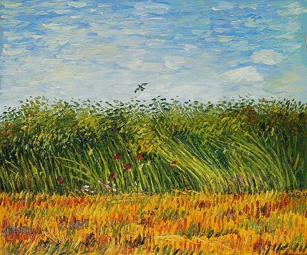
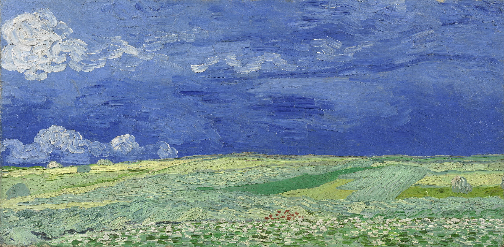

Quest'opera descrive un paesaggio campagnolo in una giornata molto ventosa. In primo piano troviamo un campo di grano con molte spighe di varie tonalità di beige. In secondo piano invece si vedono dai cespugli ed altre piante di vario genere seguite da imponenti cipressi di colore scuro. Ed infine, sullo sfondo, troviamo delle montagne di colore azzurro/blu ed un cielo colmo di candide nuvole curvilinee.
Questa è stata, con molta probabilità, l’ultima tela dipinta da Van Gogh. Dopo pochi giorni, in un campo di grano come quello raffigurato sul quadro, si sparò un colpo di pistola al cuore. In questa tela vi è racchiusa non solo la tragica esistenza del pittore ma tutta la sua vibrante tecnica esecutiva. Il quadro è realizzato con pochi colori fondamentali. Su una preparazione rossa, traccia dei segni gialli per indicare il grano, altri segni verdi e rossi per indicare le strade che attraversano i campi. Il cielo è di un blu cobalto cupo ed innaturale. Un cielo pesante ed oppressivo. Pochi tratteggi neri raffigurano un volo di corvi.
La tela è stata realizzata durante il suo soggiorno all’ospedale Saint-Rémy. Il quadro che realizza non è tuttavia una fedele riproduzione del paesaggio che egli vedeva, ma una immaginaria visione in cui affiorano anche elementi, quali il quieto paesino, presi dai suoi ricordi olandesi. Dei cipressi fanno da immaginario ponte tra la terra e il cielo.
Nella notte stellata sul Rodano (olio su tela) attualmente conservato nel museo d’Orsay di Parigi, l’artista riproduce dettagliatamente ciò che vede nell’oscurità. Le luci della città e le stelle si specchiano nel Rodano. La loro luminosità è rappresentata con un arancione acceso, mentre il blu del cielo è lavorato con il blu di Prussia e il cobalto. Le stelle magnifiche risplendono nel cielo e intorno è un luccichio di luci che brillano nel blu della notte. Il dipinto rappresenta la sofferenza del pittore e la trasformazione che la sua psiche sta subendo.
La pianura della Crau è un olio su tela dipinto nel giugno 1888 nei pressi di Arles in Provenza, nel sud della Francia nel momento della mietitura. L’artista non vuole solo raffigurare questo paesaggio sereno e assolato, ma anche il lavoro dei contadini con le fasi della mietitura. In alcune zone del dipinto si vedono infatti qua e là piccole figure intente al loro lavoro. I colori sono accesi e vivaci, tra questi spiccano ovviamente varie tonalità di giallo del grano.
L’opera “Sunset wheat fields near Arles” è un dipinto di Van Gogh realizzato con tecnica ad olio su tela nel fine giugno del 1888 (periodo arlesiano). La prospettiva nella presente composizione ha un orizzonte molto alto, tanto da rendere predominante le forti variazioni cromatiche dell’immenso campo di grano sulla piccola fascia di cielo bluastro, che con toni pressoché complementari non riesce del tutto a farne da contrappunto, rendendone anzi gradevole l’accostamento.
Il quadro è realizzato con la tecnica di olio su tela, e il soggetto, rappresenta un piccolo scorcio della città di Arles dove il pittore ha vissuto per qualche tempo. Questo uno dei quadri più belli e conosciuti di Van Gogh e lo si può intuire il perché semplicemente guardandolo. La bellezza di terrazza del caffè la sera, Place du Forum, Arles consiste nella solita contrapposizione tra i colori caldi che compongono il caffè e quelli freddi che invece si trovano a riempire le facciate degli edifici e tutto ciò che si trova in lontananza e che compone il resto dell’ambientazione.
Questo è un dipinto di Van Gogh realizzato con tecnica ad olio su tela nel maggio del 1888 (periodo di Arles). In primo piano spiccano i violacei giaggioli ai quali fanno da contrappunto le gialle variazioni cromatiche dei ranuncoli, con accostamenti tonali complementari che enfatizzano la luminosità di tutto il contesto. Lo stesso effetto van Gogh l’ottiene circondando con il verde della vegetazione le piccole abitazioni del paese situate sulla sinistra. Il cielo con una forte luminosità, proveniente da sinistra, è stato realizzato con variazioni cromatiche derivate dal blu, violetto e verde acqua. Gli alberi, situati tra i giaggioli ed il paese, sembrano formare un filtro vegetale nei campi strapieni di elementi floreali.
Nel 1887, mentre Vincent van Gogh risiedeva a Parigi, realizzò un dipinto ad olio comunemente noto come Wheat Field with a Lark. La parte centrale mostra un campo di grano parzialmente raccolto sotto un cielo modellato da nuvole chiare. Un'allodola prende il volo verso l'angolo in alto a sinistra della tela.
Van Gogh ha usato potenti combinazioni di colori in questo dipinto: il cielo blu contrasta con il grano giallo-arancio, mentre il rosso del percorso è intensificato dalle strisce verdi di erba.